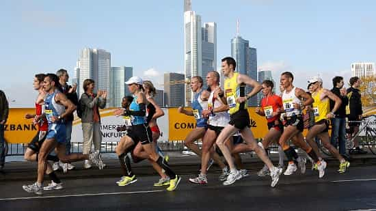

Keith is a former collegiate athlete who now writes about the latest trends in health and fitness. You can read more of his articles on his blog First Rate Fitness.


Running a marathon is an extreme test of will, discipline, mental strength, and of course endurance. Completing a race of this length has enticed people to train for months in order to accomplish this feat. Not only is running a marathon intense, but the training is absolutely grueling. Expect to spend months training multiple times a week, for many miles.

You already know that running a marathon requires a lot of training. While most people shrug it off, thinking that they can do it, a lot of people quit after only a short stretch of training. What gives?
For a lot of people, they just don’t have the mental willpower to tackle marathon training. One of the main reasons for this is that they lack a purpose. Before running a marathon, you have to decide why. “Because it’s fun” won’t cut it. When you go through training you’ll realize that running a marathon isn’t all fun and games.
Your reason for running a marathon should be because it’s something you’re passionate about. Or because you find it a true challenge—something that you won’t be able to pass up.
While it would be nice to have a cookie-cutter marathon training program, that just won’t work. People are just too different in their endurance, experience and time available for training. Therefore, you’re going to have to adjust your training based on the varying factors that dictate your ability to run.
However, we’ll do our best to use a few guidelines that all runners should implement into their training programs.
A good technique for running a marathon is to choose the date far in advance. Pick the race at least six months in advance, if not more—some suggest that novice runners start a year prior. This gives you the opportunity to write it on your calendar so that you have no excuses to not plan properly.
Although all marathons are the same length, they all have unique aspects. Some are in the heart of a city, while others are out in rural areas. Keep this in mind when signing up for your race. Also, it’s best to stick to a marathon that’s close to home. This allows you to prep adequately for the race, and get a good night’s rest and meals without worrying about traveling.
When starting out, it’s important to know your limits. This is going to be based on your prior running experience. If you have none, then start low as there’s no reason to push it. This can’t be understated. The amount of running, in terms of frequency and distance, is much more intense than a casual neighborhood jog. Injuries that usually arise from marathon training occur because mileage was built up too fast. Your body can acclimate to new forms of stress, but it takes time to do so.
Get comfortable running at distances of 20-30 miles per week (3-5 per day, 5-6x per week) before testing the waters even more. A good way to practice this is by signing up for shorter races, such as 5k’s, 10k’s and eventually half-marathons. Not only will this help you train properly, but it will give you opportunities to prepare for specific race dates, resting for the race, and recovering from it.
It’s important to break down the building blocks of a marathon so that you can incorporate them into your training. There are several factors involved:
This is perhaps the ‘key ingredient’ to running a marathon. It’s what allows you to build up over time to get to the point where you can run a full 26.2 miles.
Again, 20-30 miles is a good starting point. The long-term goal, however, should be at least 50 miles. This can be broken down into 3-5 runs per week. Any less is not enough, and any more is too much.
The intensity of these runs should be reasonably moderate. This is because you’re not trying to achieve any records with your training, but are instead trying to build up your body to be able to handle certain distances.
So let’s say you start out at 20 miles per week, but want to work up to 50. You’re going to need to find a way to add distance each week, but not so much that you over-train.
A good rule of thumb is to add 5-10% each week to your distance. So let’s say you start out at 20 miles per week. You would then add 1-2 miles to your training, perhaps broken up into different sessions.
Most of your training sessions should be at a significantly shorter distance than what you would run in the marathon, especially when building up. However, it’s important to do long runs every week or so in order to help your body adapt quicker to longer distances.
It’s best to take it easy on these runs. Move at a brisk pace, especially at the beginning, in order to build up that confidence needed to run these long distances.
A good rule of thumb for these type of runs is to move up one mile per week. Start out at a distance you feel comfortable doing and move up. You also want to dial back every 3-4 weeks, cutting down by a few miles, only to jump right back up where you were before.
For example, you go from 7 to 8 to 9 to 6 to 10. See how that works? Adjust it for your skill level.
The only way to grow is to recover! You must schedule regular rest days, as well as periods of decreased activity to allow for adequate recuperation.
If you’re one of those people who can’t sit around without doing anything, then do another form of exercise: yoga, strength training, swimming, or stretch. Just avoid high-impact exercising similar to running.
And when the date of the marathon gets closer, you’re going to have to taper off your workouts. This means that you should scale back quite a bit in terms of distance and intensity to let your body heal for the big day.
Again, the mental block of doing marathon training can be rough. Just make sure that you have a good reason to get running. Also, you can always recruit a friend to run with you. That will certainly keep you motivated to get your runs in.
Read More: How To Train Your Body For Strength Versus Endurance